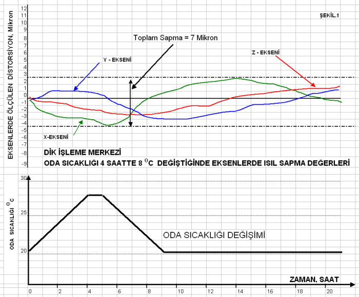

Michael
H. Heisenberg
Mak. Y. Müh.
Maysan A.Þ.
Nisan 2006, Ýstanbul
1.
GÝRÝÞ
Ýnsanlýk
tarihi boyunca, çoðalan nüfus ve çeþitlenen ihtiyaçlar ayný
bir maldan çok sayýda üretilmesini gerektirmiþtir. Bu ürünler
önce el ile teker teker üretilmiþ sonra bunlarýn çok sayýda
üretilme imkanlarý araþtýrýlmýþ ve böylece basit de olsa kalýp
teknolojileri icat edilmiþ ve geliþtirilmiþtir.
Ýlk
çaðlarda örneðin Fenike, Roma, Antik Yunan devletleri ve diðerlerinin
bakýr, gümüþ ve altýn gibi çeþitli madenlerden bastýðý ve
bugün dünya müzelerini süsleyen paralar, basit kalýplarla
þekillendirilen ürünlere güzel bir örnek teþkil eder.
Sanayi
Devrimi önce döküm kalýplarý ve daha sonra dövme kalýplarý
ile hýz kazanmýþ, onsekizinci ve ondokuzuncu yüzyýllarda silah
sanayileri kapalý kalýplarla dövme teknolojisinin geliþmesine
yol açmýþ, Goodyear tarafýndan kauçuðun vulkanizasyonunun
icadý ayakkabý, çizme, eldiven ve tekerlek lastiði kalýplarýný
ortaya çýkarmýþ, yirminci yüzyýlda otomotiv, plastik, týp,
müzik plaklarý, havacýlýk, elektrik ve elektronik sanayilerinin
geliþimi hassas kalýp üretimini zorunlu kýlarak bugün içinde
bulunduðumuz teknolojik seviyeye eriþmemizi mümkün kýlmýþtýr.
Daha
kýrk sene evvel kalýpçýlar kalýplarý torna, matkap, freze
tezgahlarýnda kaba olarak þekillendirirler, sonra eðe, zýmpara
taþý ve benzeri el aletleri ile kalýba son þeklini ve finisyonunu
verirlerdi; erkek ve diþi kalýbý birbirine alýþtýrmak için
renkli macunlar, 80 derece santigratta ergiyen Bizmut alaþýmlarý,
kurþun levhalar, deriþik olmayan asitler kullanýrlardý. Dalma
elektro erozyon makinelerinin icadý plastik kalýbý yapýmýnda
bir devrimdir. Ancak bu metot hassas ölçülerde çok sayýda
master elektrot yapýlmasýný gerektirmekte, elektrod aþýnmasý
sebebiyle yine insan eline çok ihtiyaç duyulmakta idi.
Sonuç
olarak 1960 larda kalýpçýlýk halâ hem bir sanat hem de bir
zanaat idi. Kalýp mühendisliði henüz emekleme safhasýnda idi.
2.
CNC VE YAN BÝRÝMLERÝNÝN GELÝÞMESÝ
Altmýþlý
yýllarda bankalar ve otomotiv þirketleri mainframe bilgisayarlar
yardýmýyla muhasebe kayýtlarýný tutmaya baþladýlar. 1980 den
sonra Workstation'lar üzerinde çalýþan CAD programlarý ortaya
çýktý, daha sonra CAM programlarý yazýlmaya baþladý ancak
bu çalýþmalarýn kalýp imalatýnda verimli ve uygun fiyatlarla
kullanýlmasý doksanlý yýllarda gerçekleþti.
Bu
geliþmenin üç cephesi vardýr; Birinci cephe CAD/CAM programlarýnýn
basit, kolay öðrenilir yapýya kavuþmasý, nispeten ucuz workstationlar,
daha sonra da PC ler üzerinde çalýþabilmesi, fiyatlarýnýn
ucuzlamasý; Ýkinci cephesi bu yazýlýmlarý kabul eden ve aldýðý
komutlarý uygulayabilen tezgahlarýn geliþtirilmesi; Üçüncü
cephesi de manyetik hafýza birimlerinin beher megabayt baþýna
dolar bazýnda fiyatýnýn düþürülmesi ve PC performanslarýndaki
müthiþ geliþimdir.
Bilindiði
gibi bir kalýp programýný kaðýt þerit hafýza kullanarak iþletmek
de mümkündür ama bugün örneðin bir otomobil çamurluðu kalýbý
programýnýn kaðýt þeride yazýlmasý ve bu þeritle tezgahýn
çalýþtýrýlmasý, hassasiyet ve zaman açýsýndan kabul edilemez.
Dolayýsýyla manyetik hafýza birimlerinin önemi gözden ýrak
tutulamaz.
Benzer
þekilde ölçme tekniði elektroniðindeki geliþmeler (encoderler,
ölçü cetvelleri) olmasaydý, hassas kalýp yapýlamazdý.
1982
yýlýnda hard diski olmayan, 360 kilobaytlýk diskette satýlan
LOTUS programý kullanýlarak tablo hesabý yapabildiðimiz masaüstü
bilgisayara, o zaman çalýþtýðým Þirket 12.000 Amerikan Dolarý
ödemiþti. Bugünkü PC lerin performans / fiyat oranlarýný hepimiz
biliyoruz. Bu PC lerde büyük parça iþleme çizimleri yapýlýyor,
bir kablo yardýmýyla iþleme merkezlerine data transferi yapýlarak
en karmaþýk iþ parçalarý ve kalýplar CAD/CAM kullanýlarak
üretilebiliyor.
Takým
Tezgahlarý cephesindeki geliþmeler üç baþlýk altýnda toplanabilir:
Mekanik, Kontrol elektroniði ve Yazýlým.
2.1.
Mekanik konusundaki buluþlar ve geliþmeler
Kalýp
iþleyen tezgahlarda gördüðümüz mekanik geliþmelerin en önemlisi
bilyeli-vidalý mildir. Bilyeli-vidalý mil, uzun bir çubuðun
üzerine açýlmýþ eþit adýmlý vida oyuðu, bu oyukta çalýþan
küresel bilyeler ve bilyeleri içinde hapseden bir somundan
ibarettir. Somun, vida boþluðunu sýfýra indiren bir yapýya
sahiptir.
Vidalý
mil iki ucundan yataklanýr, bir ucundan bir elektrik motoru
ile (genelde ya adým motoru ya da fýrçasýz motor - Brushless
DC motor) ile döndürülür. Motorun arkasýnda dairesel enkoder
ve manyetik fren bulunur
Bilyeler
vida dýþ çapýndaki oyuklar ile somun iç çapýndaki oyuklar
arasýnda kapalý bir kanal içerisinde dolaþýrlar. Bu sebeple
örneðin üniversal tornalarda diþ çekmekte kullanýlan ana milde
karþýlaþýlan kayma sürtünmesi bilyeli-vidalý milde yuvarlanma
sürtünmesine dönüþmüþtür ve yuvarlanma sürtünme katsayýsý
kayma sürtünme katsayýsýna göre çok küçük olduðundan vida
ve somun aþýnmasý fevkalade azaltýlmýþ, bunun sonucunda elemanlarýn
ömrü ve hassasiyeti fevkalade artmýþtýr.
Bilyeli-vidalý
mil pek çok makinede hidrolik veya pnömatik silindirlerle,
kremayer-pinyon çiftleriyle gerçekleþtirilen hareketleri,
elektrik motoru tahrikiyle daha ucuz, temiz, hafif, uzun ömürlü
ve güvenilir hale getirmiþtir.
Takým
tezgahlarýnda bilyeli-vidalý mil diþlerinde olabilecek hatve
hatalarý hatvelerin çok hassas ölçümü ve elde edilen neticelerin
tezgah bilgisayarý hafýzasýna gönderilmesi suretiyle telafi
edilir ve 1 mikron seviyesinde hassas kýzak ilerleme hareketleri
elde edilir. Bu hassasiyete kremayer veya baþka yollarla eriþilmesi
düþünülemez.
Dairesel
ve çizgisel enkoderler, elektronik özelliklerle desteklenmiþ
mekanik yapýlardýr. Çizgisel enkoderlerin optik olanlarýnýn
okuyabildiði boyut 0,1 mikron ise de rezolüsyonu (çözünürlüðü)
0,3 mikrondur. Dairesel enkoderlerin okuyabildiði en küçük
açý 0,001 derecedir yani 1 açý derecesinin binde birini okuyabilirler.
Mutlak
(absolute) enkoderler elektrik cereyaný kesildiðinde iþ parçasý
üzerinde takýmýn bulunduðu noktayý hafýzaya gönderdiðinden,
artýrýmlý (incremental) tip enkoderler nazaran daha üstündür.
Tezgah
eksen hareket motorlarý mutlak enkoder ile kontrol altýnda
tutuluyorsa atölyede elektrik kesildiðinde tezgah stop eder
fakat takým konumunu hafýzasýnda tutar, tekrar elektrik geldiðinde
bilgisayar ekranýnda iþin kaldýðý satýrýn baþýna giderek starta
basýlýr ve takým en son bulunduðu takým yolundan baþlayarak
kalýbý iþlemeye devam eder.
Mutlak
enkoderi olmayan tezgahlarda ise takým tüm programýn en baþýna
giderek kalýbý yeniden oymaya çalýþýr. Bunun kalýpçýlýk açýsýndan
zararlarý herkesçe bilinmektedir (ölçü bozulmasý, yüzey bozulmasý,
zaman kaybý vs.)
Fýrçasýz
DC motorlar (Brushless DC motor) rotorunda kuvvetli sabit
mýknatýslar ve statora tespit edilmiþ Hall sensörleri bulunan,
elektronik sürücü devresi ile beslenen, genelde pozisyonlama
amacý ile kullanýlan motorlardýr. Bilgisayar Hall sensörlerinden
ve enkoderden aldýðý sinyalleri mukayese ederek motorun tam
pozisyonlanmasýný saðlar.
Modern
tezgahlarýn kýzaklarý bilyeli veya masuralý yataklarla teçhiz
edilmektedir. Vuruntulu ve aðýr iþlerde kullanýlan tezgah
kýzaklarý ise Hidrostatik tiptendir. Bunlarda sabit ve hareketli
kýzak yollarý arasýna cebri olarak yað basýlýr ve iki metal
kýzak birbirine deðmeden (arada 10 ila 3 mikron aralýk kalarak)
birbiri üzerinde kayar; metal - metale sürtünme olmadýðýndan
yýllar sonra kýzaklar açýldýðýnda görülen ilk raspa izleri
kýzaðýn aþýnmadýðýný ispat eder.
2.2.
Termal genleþmeler konusundaki geliþmeler
Bir
metre uzunluðundaki bir demir (dökme demir veya çelik) elemanýn
sýcaklýðý bir derece santigrat arttýðýnda boyu 12 mikron uzar.
Tezgahý
teþkil eden elemanlarýn þekli ve tespit noktasý, ýsýl genleþmelerden
doðan deformasyonlarýn iþ parçasý üzerindeki negatif tesirleri,
tezgah konstrüktörlerini çok uðraþtýrmýþtýr. Yakýn yýllarda
bilgisayar çizim programlarýnýn ýsýl genleþme ve yük altýnda
deformasyon analizlerini yapabilecek özelliklere sahip olmasý,
tasarýmcýlarýn ýsýl genleþmeleri kontrol altýna almalarýný
kolaylaþtýrmýþtýr.
Kalýp
üretiminde genelde dik iþleme merkezleri kullanýlýr. Tezgah
iþ mili yataklarý saatler süren fasýlasýz ve yüksek devirli
kalýp iþleme operasyonu sýrasýnda ýsýnýr. Ýþ mili gövdesi,
buna direkt akuple elektrik motoru sargýlarýnýn Ohmik dirençleri
ve silisli sac paketinin Foucault kayýplarý sebebiyle ýsýnýr.
Bu sýrada motor ve aksamý küçük bir soðutma ünitesi tarafýndan
Freon / yað sistemi ile soðutulur. Ýþ mili kafasý üzerinde
bulunan termokupller pek çok noktada sýcaklýðý ölçerek çýkardýðý
sýcaklýk daðýlýmýný bilgisayara besler. Bilgisayar bu datayý
iþleyerek iþ miline baðlý takýmýn aþaðýya doðru ýsýl tesirler
dolayýsýyla yaptýðý deplasmaný hesaplar ve iþ mili kafasýný
o kadar yukarýya kaldýrýr böylece takým ucunun (kalýba deðdiði
nokta) uzay içindeki konumu CAD/CAM datalarý ile uyum içerisinde
kalýr.
Tezgahýn
çalýþtýðý atölye içindeki hava sýcaklýðý da 24 saat içerisinde
deðiþim gösterir. Örneðin sabah 08:00 de 20 derece santigrat
olan bina içi sýcaklýðý öðleden sonra 28 dereceye çýkabilir.
Bu 8 derecelik fark 1 metre uzunluðundaki tezgah yüksekliðinin
96 mikron uzatmasýna raðmen tezgahýn yukarýda anlatýlan sistemi
ve diðer tedbirler sayesinde toplam deformasyonu 6 ila 7 mikron
civarýnda kalmaktadýr.

|